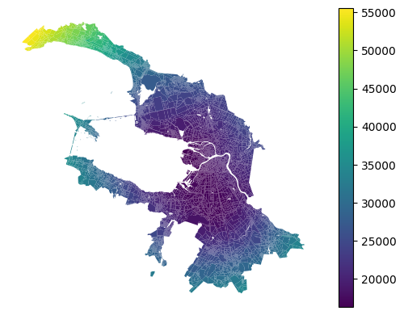

Distance relations
Straight forward way to obtain euclidean distance matrix
[1]:
import pandas as pd
blocks_gdf = pd.read_pickle('./../data/saint_petersburg/blocks.pickle')
Distance matrix
[3]:
from blocksnet.relations import calculate_distance_matrix
distance_matrix = calculate_distance_matrix(blocks_gdf)
[5]:
distance_matrix.head()
[5]:
| 0 | 1 | 2 | 3 | 4 | 5 | 6 | 7 | 8 | 9 | ... | 9523 | 9524 | 9525 | 9526 | 9527 | 9528 | 9529 | 9530 | 9531 | 9532 | |
|---|---|---|---|---|---|---|---|---|---|---|---|---|---|---|---|---|---|---|---|---|---|
| 0 | 0 | 3671 | 12961 | 13090 | 13595 | 15265 | 14353 | 9158 | 9098 | 15711 | ... | 17578 | 16948 | 16749 | 16670 | 16924 | 16681 | 16784 | 18689 | 18670 | 18856 |
| 1 | 3671 | 0 | 16211 | 16307 | 15388 | 13265 | 16733 | 11665 | 11595 | 13218 | ... | 15133 | 14921 | 14756 | 14718 | 15004 | 14742 | 14913 | 17132 | 16709 | 16841 |
| 2 | 12961 | 16211 | 0 | 296 | 8238 | 27812 | 5769 | 5855 | 5922 | 23053 | ... | 30366 | 29468 | 29249 | 29139 | 29359 | 29139 | 29181 | 30714 | 31092 | 31321 |
| 3 | 13090 | 16307 | 296 | 0 | 8010 | 27986 | 5499 | 5793 | 5861 | 22975 | ... | 30525 | 29645 | 29426 | 29318 | 29540 | 29319 | 29364 | 30912 | 31275 | 31501 |
| 4 | 13595 | 15388 | 8238 | 8010 | 0 | 28569 | 3100 | 5055 | 5079 | 17022 | ... | 30518 | 30243 | 30065 | 30010 | 30284 | 30029 | 30170 | 32214 | 32013 | 32165 |
5 rows × 9533 columns
Visualization example
[6]:
from blocksnet.analysis.network import median_accessibility
med_dist_df = median_accessibility(distance_matrix)
[7]:
blocks_gdf.join(med_dist_df).plot('median_accessibility', legend=True).set_axis_off()
